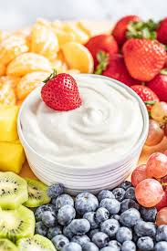

Fruit Dip

Description:
Simple delicious dip for your favorite bite sized fruit!
Ingredients:
- 8oz cream cheese, softened
- 7oz jar marshmallow creme
Steps:
- Beat cream cheese until smooth and add marshmallow creme. Blend until smooth.
- Serve and enjoy.